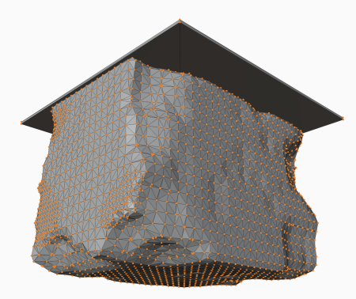
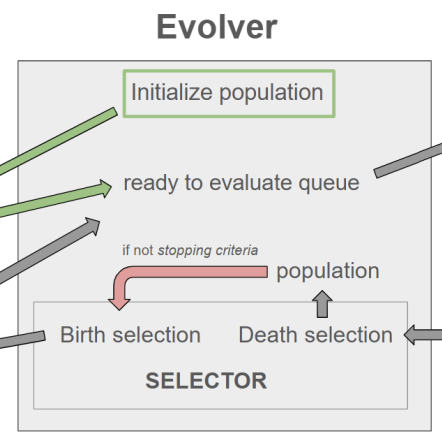
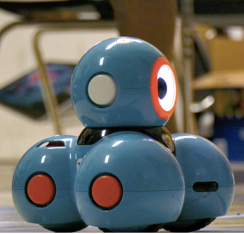

About Me:
I am a senior researcher with the Nebulous collaboration studying evolutionary algorithm applications for physics and astronomy instrumentation!
I also work as a coding instructor at The Coder School, Berkeley.

B.A. ASTROPHYSICS
UC BERKELEY C/O 2023
I am a senior researcher with the Nebulous collaboration studying evolutionary algorithm applications for physics and astronomy instrumentation!
I also work as a coding instructor at The Coder School, Berkeley.
RESEARCH

Feburary 15, 2026
ABSTRACT. — Very low Earth orbit (VLEO) enables improved spatial resolution and access to the lower thermosphere, but sustained operations are limited by strong, highly variable aerodynamic drag in the free molecular flow regime. In addition to drag, spacecraft must also meet numerous other requirements, including...
Continue reading
January 13, 2026
ABSTRACT. — Designing scientific instrumentation often requires exploring large, highly constrained design spaces using computationally expensive physics simulations. These simulators pose substantial challenges for integrating evolutionary computation (EC) into scientific design workflows. Evolutionary computation typically requires...
Continue readingDecember 1, 2023
ABSTRACT. — Heavy (Z>26) solar energetic particles (SEPs) with energies ~1 MeV/nucleon are known to leave visible damage tracks in meteoritic materials. The density of such "solar flare tracks" in lunar and asteroidal samples has been used as a measure of a sample's exposure time to space, yielding critical information on planetary space weathering rates [e.g., 1] and the dynamics and lifetimes of interplanetary dust grains [e.g., 2, 3]. Knowledge of the SEP track accumulation rate in planetary materials at 1 au is critical for...
Continue readingDates of Research Involvement: September 2021 — May 2022
OUTREACH

June 29, 2021
A team of University of Hawai'i at Mānoa students introduced the world of robots to keiki at the Institute for Human Services (IHS) in Iwilei for UH Mānoa's “Be a Scientist” day on June 28. IHS is a human services agency focused on preventing and ending homelessness. Ionica Macadangdang, a senior biological engineering major, and Evan Imata, a junior astrophysics major, provided a hands-on learning experience with Dash bots...
Continue readingCURRENT
New publication in the NASA Interplanetary Network Progress Report on evolutionary algorithm applications for spacecraft design. Read the abstract here.
I conducted research on solar energetic particle interactions with interplanetary dust grains at the Berkeley Space Sciences Laboratory. My results have been published in The Astrophysical Journal Letters and the NASA Technical Reports Server. Read the abstract here.